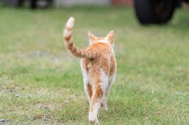
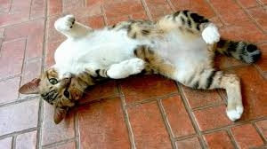
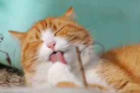
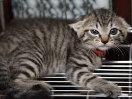

しっぽを立てている
嬉しくて機嫌が良い
しっぽを高く立てて歩いているとき、猫はとても前向きな気分です。 遊びたい・甘えたいなどの感情を持っていることが多く見られます。
安心してリラックスしている
周囲に警戒心がなく、自分の居場所を安全だと感じているサインです。
相手に好意を持っている
飼い主に向かってしっぽを立てるのは、信頼と愛情の証です。
猫は言葉の代わりに、しっぽ・耳・体の動きで感情を伝えています。 日々のしぐさを観察することで、猫の本当の気持ちが見えてきます。

しっぽを高く立てて歩いているとき、猫はとても前向きな気分です。 遊びたい・甘えたいなどの感情を持っていることが多く見られます。
周囲に警戒心がなく、自分の居場所を安全だと感じているサインです。
飼い主に向かってしっぽを立てるのは、信頼と愛情の証です。

おなかは猫にとって急所です。 それを見せるのは、心からリラックスしている証拠です。
周囲を危険だと感じておらず、落ち着いた状態で過ごしています。
人の前でおなかを見せるのは、深い信頼関係がある証です。

静かな場所での毛づくろいは、心に余裕がある状態です。
緊張や不安を感じたあと、自分を落ち着かせるために行います。
人前で毛づくろいをするのは、警戒心がないサインです。

大きな音や慣れない環境に対して、身を守ろうとしています。
この状態では無理に近づかず、距離を取ることが大切です。
「これ以上関わらないで」という猫からのサインです。